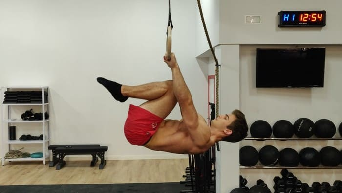
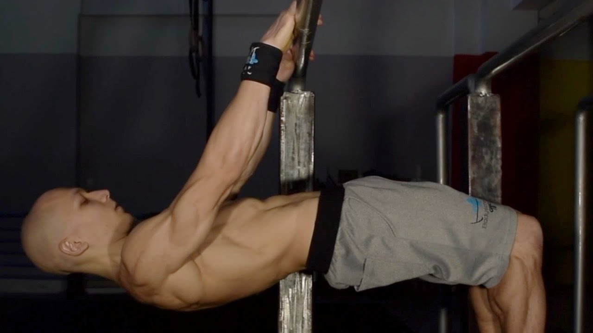
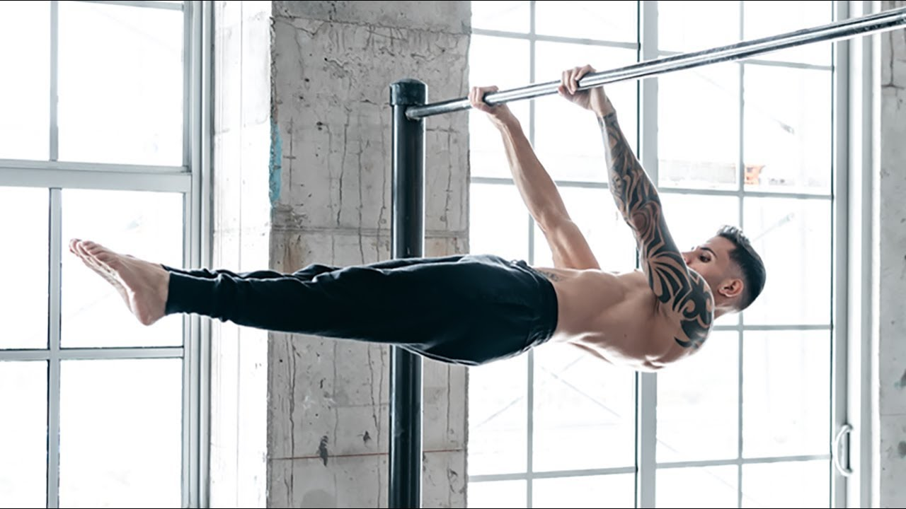

Front lever
el front lever es un ejercicio estatico en el que hay que realizar una palanca para mantenernos colgados en el aire
Pasos a seguir:
-

Tuck de front: empezar practicando tuck de front, es el ejercicio mas sencillo adaptando asi los dorsales
-

harlf front lever: seguir con half de front sera mas complicado y nos acercara al movimiento final
-

Front lever: Ya habriamos conseguido el truco que queriamos asi teniendo nuestros dorsales adaptado y musculos.